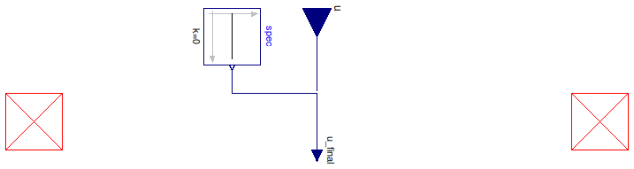

Table of Contents
- User's Guide
- BCs
- Sensors
- Assemblies**
- Regions**
- Subregions
- Connectors
- Characteristics
- Units
- Quantities
- BaseClasses
- **Please check back soon or contact kdavies4 at gmail.com.
Download
- Latest: FCSys-2.0.zip (**Check back soon.)

| Name | Description |
|---|---|
| Prescribed density difference, with material conservation | |
| Prescribed current, with material conservation | |
| Base classes (not for direct use) |
 FCSys.BCs.FaceDifferential.Material.Density
FCSys.BCs.FaceDifferential.Material.Density
| Type | Name | Default | Description |
|---|---|---|---|
| Boolean | internal | true | Use internal specification |
| Constant | spec | redeclare Modelica.Blocks.So... | Internal specification |
| BCType | bCType | BaseClasses.BCType.Density | Type of BC |
| Type | Name | Description |
|---|---|---|
| Material | negative | Material connector for the negative face |
| Material | positive | Material connector for the positive face |
model Density "Prescribed density difference, with material conservation" extends BaseClasses.PartialBC(final bCType=BaseClasses.BCType.Density, u( final unit="N/L3")); equation negative.rho - positive.rho = u_final;end Density;
FCSys.BCs.FaceDifferential.Material.Current
| Type | Name | Default | Description |
|---|---|---|---|
| Boolean | internal | true | Use internal specification |
| Constant | spec | redeclare Modelica.Blocks.So... | Internal specification |
| BCType | bCType | BaseClasses.BCType.Current | Type of BC |
| Type | Name | Description |
|---|---|---|
| Material | negative | Material connector for the negative face |
| Material | positive | Material connector for the positive face |
model Current "Prescribed current, with material conservation" extends BaseClasses.PartialBC(final bCType=BaseClasses.BCType.Current, u( final unit="N/T")); equation negative.Ndot = u_final;end Current;